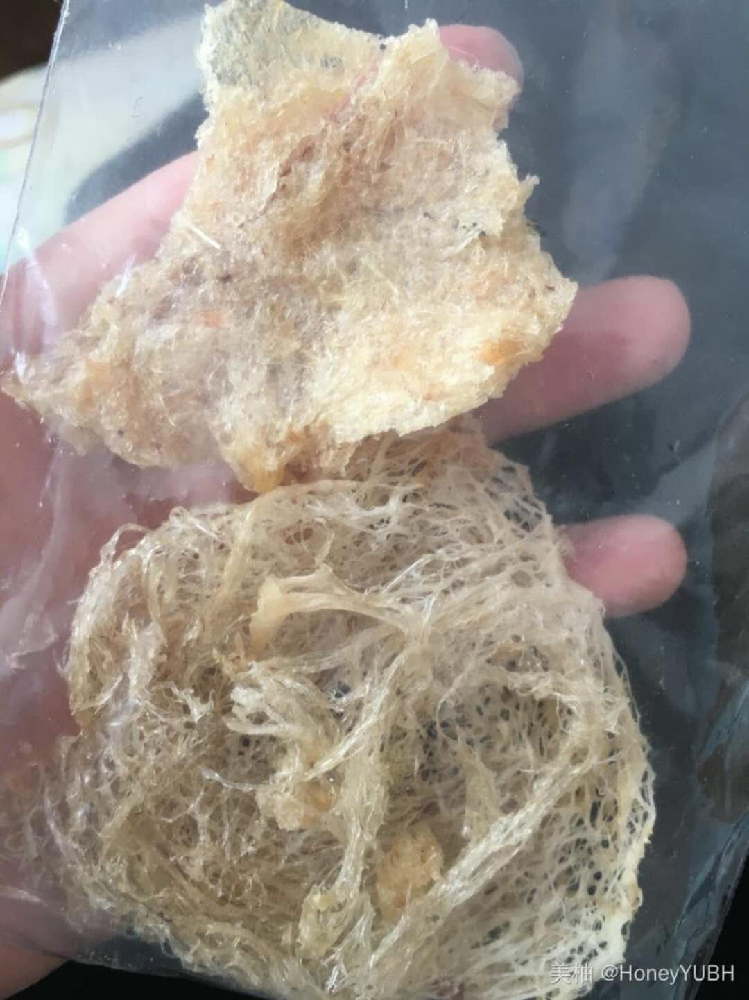
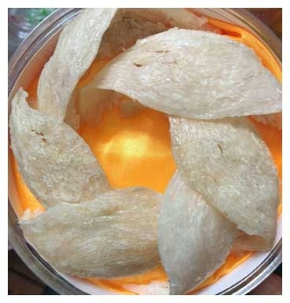
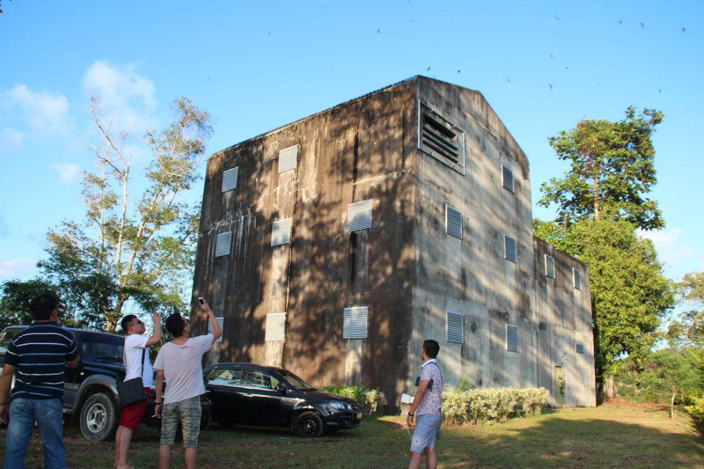
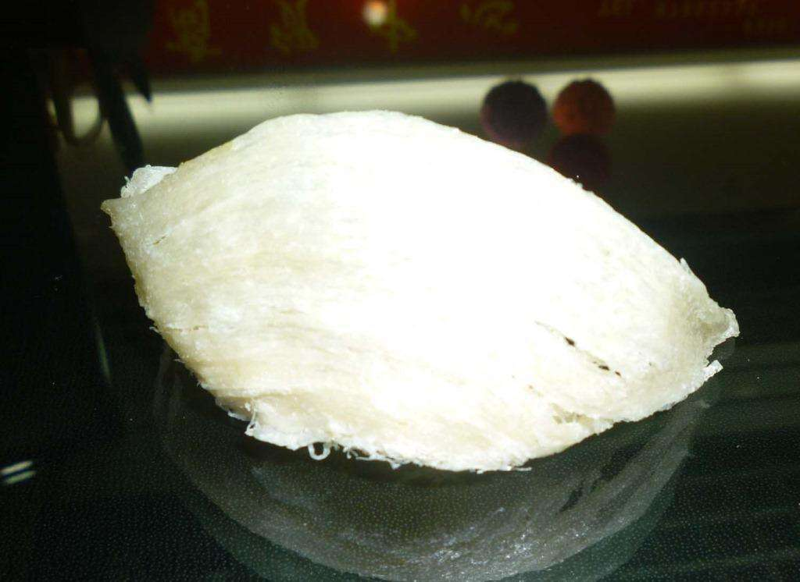
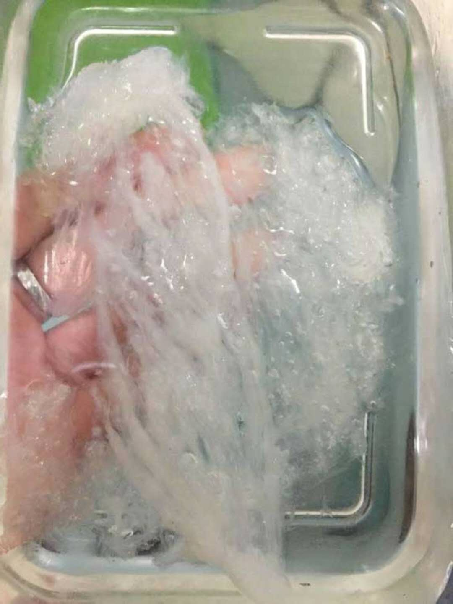
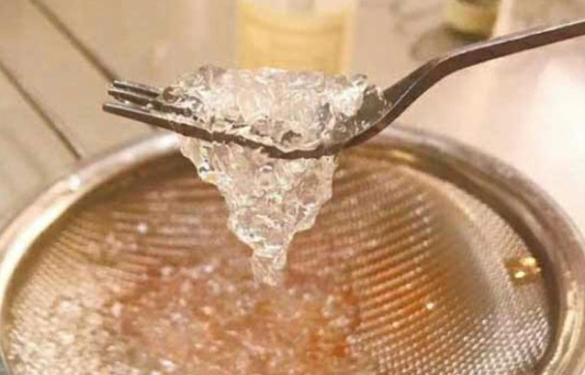
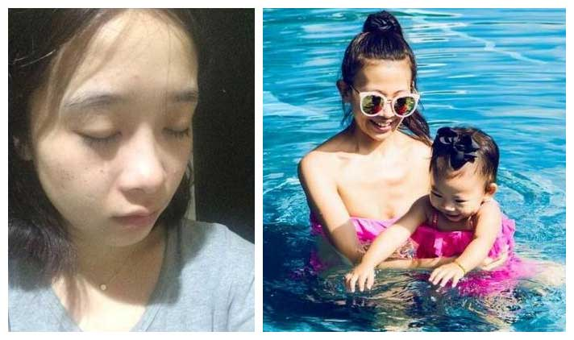
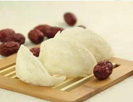

终于知道孕期应该怎么补充营养了！孕妈们一定要注意，别只吃叶酸……

HoneyYUBH楼
我怀孕2个多月，精神不好，吃啥吐啥，医院说需要补充营养，不然会严重影响宝宝的发育。现在我只吃了叶酸，请问大家有什么妈妈有精神、宝宝也受益，性价比高的补品，先谢谢大家……婆婆前段时间给我买了燕窝，大家看看这个品质怎么样？
6-04
16269
-
宝贝小海星05-18
楼主首选燕窝啊，特别是你现在身体比较虚弱，吸收效果最好。
燕窝看着贵，但是每天只需要吃几克，买一次能吃一年多，一天算下来真没几个钱。关键是，燕窝能够防止妊娠纹，促进宝宝大脑发育。
我跟身边朋友就是备孕就吃燕窝，孩子真的是聪明又健康，自己产后恢复快。
1赞
小腰逍遥楼：赞同！并且吃燕窝一定要看产地，印尼的燕窝品质最好，百度都有的。
-
悠然见南山PB05-18
楼主，燕窝对女人尤其是孕妇来说，确实是好东西！我生了两个孩子，二胎吃燕窝，明显比头胎恢复好，孩子也很少感冒发烧什么的，太省心了。
4赞
HoneyYUBH楼：你好！请问你是买的哪里的燕窝？我这个品质怎么样？
悠然见南山PB：这个千万不要吃，明显是刷了胶的。跟我买的燕窝比起来，差太多啦！
HoneyYUBH楼：你说的，她们家燕窝很好吗？
悠然见南山PB：嗯嗯，我一直买的都是的燕窝。是我老公去印尼出差的时候找到的，在印尼原产地有自己的燕窝基地和实体店，我老公还去她们的燕窝基地参观过呢。因为是直供，不光质量好，价格还比较公道，你要是感兴趣，就加微信 问一下吧
HoneyYUBH楼：好的，谢谢！
-
李三金05-18
楼上说的是吗？我怀孕也一直吃她家的燕窝！现在给孩子做辅食，还经常放一些呢
1赞
-
涟漪，蒽05-18
燕窝含有燕窝酸，对宝宝神经系统的发育特别有好处，好多高级的月子中心每天都会提供燕窝
而且悄悄告诉姐妹们，吃燕窝对皮肤修复也很有帮助啊
我本身是疤痕体质，怀孕坚持吃燕窝，一点妊娠纹都没有，同屋生产的妈妈们都羡慕坏啦
1赞
HoneyYUBH楼：嗯嗯，我也是听人这么说，才打算吃燕窝的
-
_文9406-06
我在某宝上买了燕窝，怎么老煮不开呀，什么情况？
 3赞
大大妮呢：你这个燕窝也太白了，真正的好燕窝都是米黄色或明白色，你这个明显颜色漂白了，刷胶刷得也很严重嘛！你还是加上的微信号 ，看看真正的印尼燕窝什么样吧
_文94回复大大妮呢：你就是在她那里买的吗
-
@小豆芽WP06-06
我也加过这个微信，还有老板娘在燕窝挑毛间的照片，她做事很认真，每一盏燕窝都会亲自检查！
3赞
@HoneyYUBH回复小豆芽WP：燕窝都要人工挑毛呀？那得多麻烦
@小豆芽WP回复HoneyYUBH：燕窝也有不人工挑毛的，那就是泡发之后冲洗再定型，不过那样营养会流失很多，不如纯手工挑毛的燕窝。
@HoneyYUBH回复小豆芽WP：哦哦，原来是这样。
-
林夕06-06
我刚加了的微信号，怎么没理我呢，是不是加错了？
4赞
@小豆芽WP回复林夕：的老板娘经常会到燕屋去考察，挑毛和包装也是天天去看，有时回复不及时，你只要加的是微信号 就不会错，我是她家老顾客了，要耐心等待哦~
林夕回复小豆芽WP：好的，我看她朋友圈里的动态好像都是关于燕窝的。
@小豆芽WP回复林夕：诶，你能看到她朋友圈啊？那就是通过验证啦。
林夕回复小豆芽WP：还没有哦，我现在只能看到10张照片，不过感觉已经学到很多东西了。
@小豆芽WP回复林夕：哈哈，她每天都会在朋友圈分享各种燕窝知识哦，你以后有的学呢。
林夕回复小豆芽WP：真的吗？太好了，我正愁不知道向谁去请教燕窝知识呢，好想她快点同意我的的好友申请啊。
@小豆芽WP回复林夕：哈哈，别着急，她忙完之后肯定会加你的。
-
乐逸妈妈～06-06
这个真不是给打广告，她家的燕窝真的靠谱。种草！
4赞
☆哒玉琉琉☆：我每次吃的燕窝，都是煮一盏冷藏，每天只取出3g的量来吃，一斤燕窝能吃一年，毕竟好东西要慢慢享用。
乐逸妈妈～回复卡丁车：对，咱们女人要工作又要照顾家庭，必须对自己好一点~
-
ZoeCl06-06
Omg,你这完全是刷胶粘碎的燕窝，黑心卖家才卖这种燕窝，粘的全是燕碎拼凑起来的，我自己吃燕窝都5年多了，这种差货，简直不能吃，建议楼主能退就退吧，吃了也没营养，给你看下天然的燕窝是怎么样的，可以对比一下。
4赞
HoneyYUBH：嗯嗯，知道了已经加上我了，正在看她朋友圈，真的学到了好多
-
玮玮Mother06-06
楼主婆婆买到假货了
2赞
-
征程HTHI06-06
我之前去印尼旅游，听导游说，燕窝挑毛特别辛苦，燕窝挑毛师低着头坐一下午，才能挑干净一盏，真的是功夫活！
赞
-
喜妹儿06-06
以前整个人没精打采，从怀孕开始吃燕窝，现在宝宝两岁了，给大家看看效果。
赞
小猫响叮当回复喜妹儿：哇，辣妈美美哒，小公主也好可爱~
-
VVivianXM
06-06
想找咨询印尼燕窝，是加这个 微信号吗？
赞
☆哒玉琉琉☆：是的，我之前加的就是这个号，她家燕窝都是从印尼直接供货，没什么中间商，价格相对实惠。
-
南柯FJE06-06
楼主千万不要吃，我不知道你婆婆哪里买的，但你为了自己和肚子里的宝宝，不要贪便宜，一分钱一分货。
赞
-
丑萌丑萌哒8K1O06-06
燕窝真的是好东西，对产后下奶也很有帮助呢，我姐也是从怀孕开始吃燕窝，奶水特别白。
赞
明天会更好：一直不敢乱买，之前都是找再印尼的朋友帮我买，后来他们全家回国了，给我介绍了，买过之后和朋友以前买的一样好，确实是印尼正品燕窝！
-
侯得山06-06
收藏了！
赞
-
仙人掌的小妖精06-06
备孕中，我也要加微信
赞
为什么孕期一定要吃燕窝？
豆豆豆豆
6-5 23回复
怎样生一个漂亮的宝宝？
ovesoswee 6-5 33回复

吃银耳真的可以替代燕窝吗？
春光好
6-5 26回复
想要产后恢复快，记得常吃燕窝
zengyu95 6-5 15回复